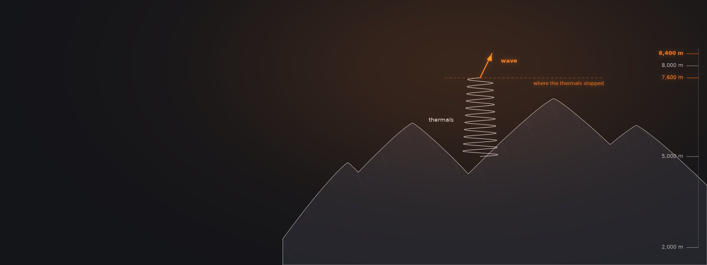
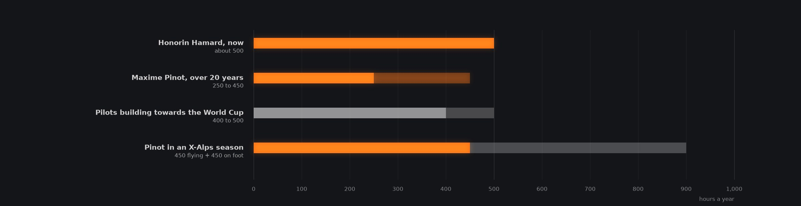
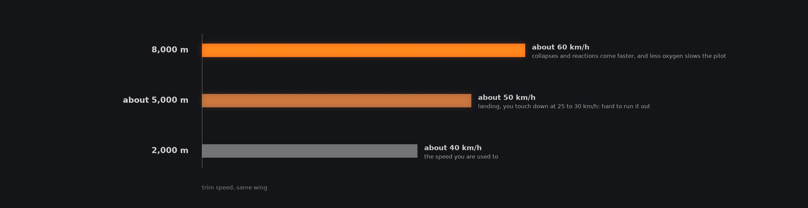
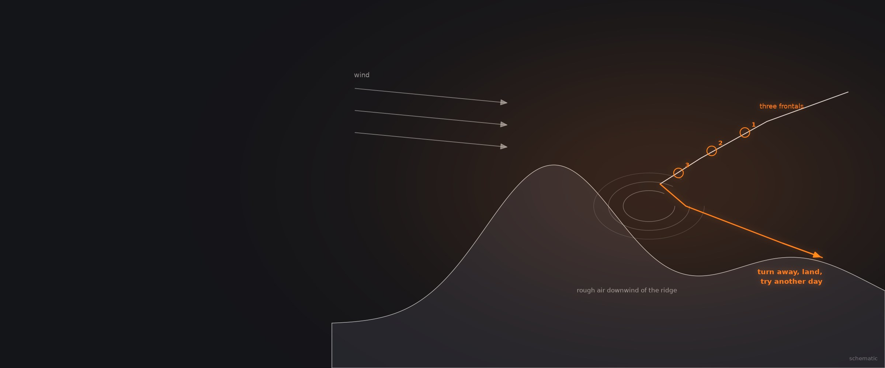

How Do the Best Paragliding Pilots Train and Think?
How pilots at the top of the sport got there: the hours they put in on the ground and in the air, when they chose to move up a wing, what they learned about limits at altitude and in racing, and what they do in every competition.
Four conversations. A mountaineer who has flown above 8,000 metres, two French competition pilots who have both been world champion, and a hang glider pilot who helped start Ozone.
The four conversations
Open any tile for chapters, quotes and links Sky Gods : Flying to WinHonorin Hamard11 chapters
Episode 567 min
Sky Gods : Flying to WinHonorin Hamard11 chapters
Episode 567 min Sky Gods : Flying 8000ersAntoine Girard13 chapters
Episode 50103 min
Sky Gods : Flying 8000ersAntoine Girard13 chapters
Episode 50103 min
 113 mins of Unhinged conversations with The Man Behind Ozone ParaglidersRobert (Robbie) Whittall11 chapters
113 mins of Unhinged conversations with The Man Behind Ozone ParaglidersRobert (Robbie) Whittall11 chapters
Four routes to the top of the sport
Two came up through family flying and hundreds of hours on the ground, one arrived from climbing's highest peaks, and one from hang gliding, before helping to start Ozone.
Maxime Pinot had his first tandem flight at 7 or 8, spent the years from 9 to 12 ground handling a small wing, and flew solo at 13. From 15 he went to a government-supported high school in the Pyrenees that trains young pilots in cross-country alongside their studies, which he calls one of the best places to learn everything you need. Honorin Hamard's father, who taught himself to fly in 1987, drove him around France's sites like a Tour de France. He flew more than 200 hours in each of his first two years, doing over a hundred takeoffs and landings a day on the windy coast near home, and started competing in the flatlands before he learned the mountain breezes. He told his father early on that his dream was to be world champion.
Antoine Girard came from competition rock climbing and mountaineering. He attempted Cho Oyu in 2004, climbed solo on K2 in 2006 and turned back alone at around 8,000 metres, and tried Broad Peak twice, once taking off from Camp 3 at 7,200 metres. An expedition took a month for one summit; with a paraglider, he says, he can see ten or twenty in a day. He won the first paragliding competition he entered, in 2011, finished third in his second, the Red Bull X-Alps, and has flown three more since, mostly for his sponsors, because his real goal is expeditions. Robbie Whittall started on hang gliders and describes the freedom of his first solo flight as the start of an obsession, dedication being the polite word for it. He moved to paragliding, then with Mike Cavanagh and Dave Pilkington started Ozone, where his part was design and testing.
Hours, on the ground and in the air
Every guest who races came up through big volumes of flying and ground handling. Maxime Pinot's X-Alps seasons added as many hours again of endurance training on foot.
Maxime Pinot sees a common thread in the young pilots who progress fastest: they played with their wings on the ground for hours. That builds the feel for brake pressure they then use in the air, and makes their launches safer. If you are not completely confident on launch, he would put ground handling first, and he still does it in winter. He is shocked by how many pilots he sees afraid on launch in ordinary wind, which he calls gambling. To know your strengths you also need other pilots to compare with; flying alone, you can be the king of your valley and never learn that someone climbs better.
The numbers are large. Pilots who set out from scratch to reach the World Cup typically fly 400 to 500 hours a year, Pinot says, though experienced pilots can afford to fly less. He has flown between 250 and 450 hours a year for about 20 years, some 6,000 to 7,000 in all, and in a season combining the X-Alps with World Cups and championships he trained 900 to 950 hours, about half in the air and half on foot. Honorin Hamard, now a test pilot, flies about 500 hours a year and has around 8,000 in total. To join Antoine Girard on a high-altitude expedition in Pakistan, you should regularly fly 100 kilometres in the Alps, or 200 in flat country; that is the entry level, and records need more.

After Maxime Pinot, Episode 50, chapters 3, 4 and 12, and Honorin Hamard, Episode 6, chapter 11.
The wing is rarely the limit
Honorin Hamard calls his early jump to a demanding competition wing his big mistake. He and Maxime Pinot both argue for keeping a wing longer than feels necessary, and Antoine Girard steps down a class for expeditions.
Honorin Hamard's progression was careful at first: about 250 to 300 hours on his first wing, 200 to 300 on a sportier B, an SIV course on each, and around 100 hours practising on his first competition wing along the coast before racing it. Then, between his second and third years of competing, he moved to a far more demanding wing to match his rivals, and threw his reserve after a frontal on it, which he calls maybe his big mistake in paragliding. His rule now: move up when you know the wing so well that nothing surprises you, even its collapses, and after more than 200 hours on it. A better glider does not mean better flights, he says; B and C wings are more than enough for big flights, and he starts his own students on an easy EN B they can keep for two to four years.
Maxime Pinot says the young pilots he coaches are often upset when told to keep their wing, and then progress enormously when they do step up, because they are ready. You have reached the end of a wing, in his view, when you understand its whole speed range, feel confident in any conditions you fly, and can predict how it will behave; handling a full stall over a lake is not the test. Frequent collapses are a piloting problem, so after any significant one he takes five minutes to work out why. Antoine Girard flies a top-level two-liner in the Alps, but on expeditions takes an easier intermediate two-liner, because on a new or remote site it is better to step down one level.
Knowing where the edge is
Thin air changes the numbers, fatigue changes the pilot, and some conditions are beyond what a paraglider is for. Each guest has a moment that showed him where his limit was.
At altitude, Antoine Girard says, the only thing that changes about the wing is its speed: around 40 km/h at 2,000 metres becomes about 50 in the middle and 60 at 8,000, so collapses happen faster and a landing at 5,000 metres means touching down at 25 to 30 km/h. The pilot changes too: with less oxygen the brain slows while the wing speeds up, so he recommends oxygen for pilots new to altitude, and a step by step acclimatisation, sleeping a little higher each night. His worst moment came over Peru, when a convergence cloud formed around him in seconds at about 7,300 metres. Inside it he took repeated collapses while still climbing at 6 or 7 m/s, his glasses and instrument froze, and he only escaped near 8,000 metres by flying towards the sun above the cloud top, at minus 35 degrees, in thin gloves. He calls it a small mistake and a very bad moment; in that storm, he says, a reserve was not an option.
Honorin Hamard's 329 kilometre FAI triangle record in the Alps fell this year to a younger pilot, on a day they were both attempting it. Stuck downwind behind a mountain, Hamard took three frontal collapses and decided to go down rather than risk his life; the other pilot crossed a little earlier with a little less wind. Maxime Pinot calls the 2023 X-Alps the worst conditions of his life. In one X-Alps, on four hours' sleep a night, he found himself falling asleep at 4,000 metres in difficult air, and since 2023 he has felt fear in situations that never frightened him before, and works on it with a psychologist. Finishing the X-Alps does not mean you can fly in anything, he says: wings have limits and so do pilots. For the young pilots he trains, the rule is simple: if a race would cancel the task, you do not fly. Robbie Whittall's moment came in the Himalaya, climbing straight to about 7,000 metres over Zanskar in rough air: he felt smaller than a leaf in the wind, and says it probably changed his life.

After Antoine Girard, Episode 5, chapter 8. Rounded, as he gives them.

I was stuck downwind behind the mountain and took three frontals. I could not catch him, so I stopped there rather than maybe kill myself. Sometimes you have to say no, go back to the ground and try another day.
Honorin Hamard Episode 6, paraphrased
A record attempt that ended in the lee: three collapses, then a turn away to land.
What they do in every competition
Know the task by heart, keep your eyes outside, drink after every thermal, and have simple rules for when to go. And sometimes, as Robbie Whittall puts it, be the pilot who leaves the gaggle.
Honorin Hamard learns each task so well that he barely needs his instrument: a vario on his helmet tells him by sound whether he is climbing, which leaves his eyes free for the other pilots and the birds. He does not attack early, because leading points come later, but works hard to be among the highest after the first climb, where five or ten metres make a difference. If someone out-climbs him in the same thermal, he changes technique, less outside brake or a touch of B riser, and copies what works. He drinks a little every five minutes, can lose five litres on a flight in Brazil, and sets up his own glider before every competition so that he never blames his equipment. A coach helps him calm down when he is too fired up, and with a psychologist he realised he had been racing for his father watching the live tracking rather than for himself.
Maxime Pinot's habits are similar: 30 to 50 grams of carbohydrate an hour in his drink, a sip or two every time he leaves a thermal, and no alcohol after flying. For the young French pilots he coaches there are simple rules that save thinking time: if someone is climbing within your glide reach and you do not go, you have broken the rule; and when a flight turns difficult, the first job is to find another pilot to rely on. In a big gaggle, he says, the best climbers use their eyes, watching the whole circle and moving quickly to whoever is going up. Robbie Whittall adds the other side of it: following a fast gaggle is not easy, but the fun is in being the pilot the gaggle follows, and that means someone has to be brave enough to go a different way.
Worth remembering
Each one links to the chapter where it is saidCarry two, and neutralise with one brake
Honorin Hamard flies with two reserves, so a blocked handle, a snagged line or a reserve thrown into the glider still leaves him the other one. He chooses squares because they opened fastest in his experience. Once under a reserve, the manuals say pull the B risers, but he finds that often too hard: he takes one brake and keeps pulling until the wing balls up.
Honorin Hamard Doing the work that makes the sport saferBuilding a pilot
Fly a lot, and land a lot
Honorin Hamard's first years: over 200 hours a year and a hundred takeoffs and landings a day on a windy coast.
Honorin Hamard The world record that came down to one momentGround handle until launching is boring
If you are not fully confident launching, Maxime Pinot would put ground handling first.
Maxime Pinot Airtime, and whether anything replaces itFind someone to compare with
Flying alone you can be king of your valley and never know who climbs better.
Maxime Pinot Airtime, and whether anything replaces itKnowing the limits
Stop when it stops making sense
Three frontals downwind of a mountain ended Honorin Hamard's record attempt. He went down to try another day.
Honorin Hamard What legendary actually meansIf the task would be cancelled, do not fly
Maxime Pinot's rule for training young pilots: there is no point training in conditions a race would not fly.
Maxime Pinot The cultural assumption about flying seriouslyEverything is faster up high
At 8,000 m a wing trims at about 60 km/h instead of 40, and collapses and landings come faster too.
Antoine Girard Where the air starts feeling differentIn a race
Know the task without looking
Learn the course by heart so your eyes are free for the other pilots and the birds.
Honorin Hamard Practising spirals on only one sideDrink every time you leave a thermal
Maxime Pinot's habit, with carbohydrate in the water, because focused pilots forget.
Maxime Pinot Soaring, thermalling, and keeping them separateCopy whoever climbs better
Honorin Hamard tries less outside brake or a touch of B riser, and keeps what works.
Honorin Hamard Questions from someone who has never racedQuestions these conversations answer
Each answer links to the chapter of the episode where the guest says it.
Can you paraglide at 8,000 metres?
Yes. Antoine Girard reached 8,100 metres on thermals alone on his first such flight, in 2016. On a later record flight to 8,400 the thermals stopped at 7,600 and he climbed the rest in wave at 4 to 5 m/s, stopping by choice. In Pakistan, he says, thermals below about 7,500 metres are often smoother than in the Alps, because the big mountains break the wind.
Antoine Girard Do thermals stop above a certain heightHow fast does a paraglider fly at high altitude?
Faster, because the air is thinner. Antoine Girard gives about 40 km/h at 2,000 metres, about 50 in between and about 60 at 8,000 on the same wing. Collapses and reactions come faster too, and landing at 5,000 metres you touch down at 25 to 30 km/h, too fast to run comfortably. Meanwhile, with less oxygen, the pilot's thinking slows down.
Antoine Girard Where the air starts feeling differentHow do you acclimatise for high-altitude paragliding?
Only flights above about 5,000 metres need it, says Antoine Girard, and the method is the mountaineer's: step by step, sleeping at around 3,000 metres at first, then 3,500 the next night, and higher again after that. In a new region he also spends two to four days watching the weather in the morning, midday and evening, with only small flights, and rests after travelling.
Antoine Girard How he acclimatisesHow does the French paragliding team train?
Mostly by flying together, says Honorin Hamard. On good days a big group goes to the best site and tries to fly the biggest cross-country of the day, with retrieves organised so nobody minds landing out. On weaker days the coach sets specific work, such as staying in a gaggle or attacking from it. The Alps close by, good coaches and pilots sharing everything are, he thinks, the secret.
Honorin Hamard The technology behind the French teamWhy does ground handling matter so much in paragliding?
Because the feel you build on the ground is the feel you use in the air. Maxime Pinot notices that the young pilots who progress fastest have usually played with their wings for hours. Ground handling trains your sense of brake pressure, when to use the brake and when not to, and it makes launches safer. It sounds old school, he says, but it is the truth.
Maxime Pinot Choosing the disciplines to commit toWhy do competition pilots carry two reserves?
Honorin Hamard carries two so that if one handle is blocked, a line snags or he throws one into the glider by mistake, he still has the other, on either side. He uses square reserves because they have opened fastest in his experience, and in a race he expects to throw close to the ground. Under a reserve, he neutralises the wing by pulling one brake.
Honorin Hamard Doing the work that makes the sport saferIs beer after paragliding a bad idea?
Maxime Pinot thinks so. Alcohol after a flight is the worst idea, he says, because it dehydrates you further, and the belief that beer rehydrates you is a myth. Right after landing from a long race the better move is something sugary, because depleted muscles and brain can restock carbohydrate quickly then. He almost never drinks during a competition, and this one was an exception.
Maxime Pinot Gliding, the least stressful time in the airWhat should I eat and drink on a long paragliding flight?
Maxime Pinot eats plenty of carbohydrate before flying, because the brain burns a lot of it. In the air he aims for 30 to 50 grams of carbohydrate an hour, mostly as powder mixed into his water, with gels as a backup. Focused pilots forget to drink, so he built a habit: a sip or two every time he leaves a thermal.
Maxime Pinot Soaring, thermalling, and keeping them separateWhat tactics do paragliding competition pilots use?
The young French pilots Maxime Pinot coaches learn simple rules that save thinking time in the air. If someone is climbing within your glide reach and you do not go, you have broken the rule. When things turn difficult, the first job is to find another pilot to rely on. Pilots who rely only on reading the conditions bomb out more, and the rules build experience faster.
Maxime Pinot What can I do differentlyWho founded Ozone paragliders?
Robbie Whittall describes a few passionate pilots deciding to do it themselves. He wanted to start a brand, and found partners in Mike Cavanagh, then the British team manager and an accountant, and Dave Pilkington. Mike took the business side, Dave production and Robbie design and testing; Bruce Goldsmith was involved early on. Ozone later set up its own factory in Vietnam.
Robbie Whittall Turning, finally, to paragliding